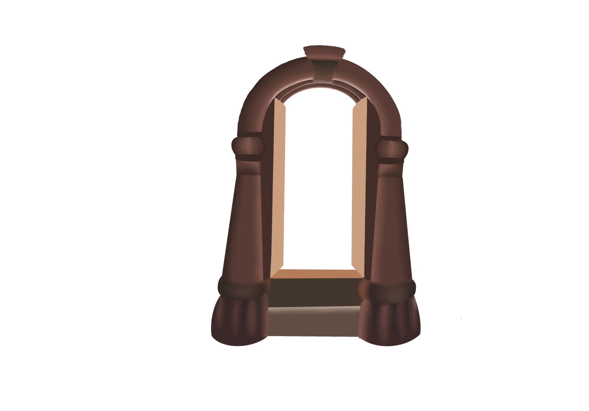

Rapunzel
Told in Two Ways
Welcome to the tale of Rapunzel from two naraatives. The left side of the page will be the 1800's version of the story "Rapunzel", and the right side will be the Disney version "Tangled".
Enjoy!

Once upon a time, there was a man and a woman who had long wished for a child. There was a garden belonging to a sorceress behind their home filled with beautiful flowers and herbs. No one dared enter this garden.
One day the woman saw the most beautiful Rapunzel. She longed for some, but not knowing how to get any, she became miserably ill.
The man, who loved her dearly, thought, "Before you let your wife die, you must get her some of the Rapunzel, whatever the cost."

Once upon a time, a long time ago, a king and queen longed to have a child. After many years the queen finally became pregnant.
Meanwhile, deep in the forest lived an evil witch, Gothel. This evil witch had found a magical flower, which helped her hide her true age.
The queen suddenly became gravely ill and the king sent out soldiered to find the flower that was rumored to heal in order to save the queen and unborn baby’s lives. The soldiers found the flower Gothel had been using to reverse her age and took it.
So late one night he snuck into the garden and stole some Rapunzel, and took it to his wife. It tasted so very good to her that by the next day her desire for more had grown threefold. The man once again he climbed into the garden. To his horror, the sorceress was standing there.

The queen quickly recovered and gave birth to a beautiful baby girl who they named Rapunzel.
Gothel snuck into the castle in the dead of the night and tried to cut a piece of Rapunzle’s hair to keep the healing powers for herself, but it quickly turned brown and lost all of its power. Gothel knew her only option was to take the child, and raise her as her own, and so she did.
She scolded him fiercely for daring to enter and steal from her garden.
He excused himself as best he could with his wife's pregnancy, and how it would be dangerous to deny her anything.
Finally the sorceress spoke, "I will accept your excuse and even allow you to take as much rapunzel as you want, if you will give me the child that your wife is now carrying.” In his fear the man agreed to everything.
The sorceress named the little girl Rapunzel, and took her away. When she was twelve years old, the sorceress locked her in a tower that stood in a forest and that had neither a door nor a stairway, but only a tiny little window at the very top.
When the sorceress wanted to enter, she stood below and called out:
Rapunzel, Rapunzel,
Let down your hair to me.
Rapunzel had splendid long hair, as fine as spun gold. When the sorceress called out, she let it fall twenty yards to the ground, and the sorceress climbed up it.
The poor princess grew up in the tower unaware of her status, and the king and queen released lanterns into the night sky every year on her birthday in solidarity.
A few years later it happened that a king's son was riding through the forest. He heard Rapunzel singing beautifully as he passed by.
He came to the forest every day, until once he saw the sorceress called to Rapunzel with her little calling cue.
The next day, just as it was beginning to get dark, he went to the tower and called out:
Rapunzel, Rapunzel,
Let down your hair.
The hair fell down, and the prince climbed up.
At first Rapunzel was frightened when he climbed up, but soon she came to like the young prince and he began to come every day. Thus they lived in joy and pleasure for a long time.

One day an intruder named Flynn Rider climbed her castle walls in an attempt to escape a palace guard and horse with the princess’s crown which he had stolen from the king and queens castle. In fear, Rapunzel whacked him over the head with a frying pan and he crumpled to the ground.
Rapunzel finds the crown in his belongings and cracks a deal with Flynn. She says that if he will take her to see the lanterns on her birthday she would give his crown back. Flynn hesitantly agrees.

The sorceress did not discover what was happening until one day Rapunzel said to her, "Frau Gothel, tell me why it is that my clothes are all too tight. They no longer fit me."
"You godless child," cried the sorceress. "I thought I had removed you from the whole world, but you have deceived me nonetheless."

Rapunzel and Flynn make it to the kingdom and they join the people of the town for festivities and then experience the floating lanterns over the water.
After this magical experience, Flynn has a change of heart and decides to give the crown back but is tricked by Gothel. He is knocked out and tied to a boat which convinces Rapunzel that he ran off with the crown, so she returns with Gothel.
Rapunzel thinks back on the day and slowly comes to the realization that she was the lost princess. She confronts Gothel, who only becomes angry and aggressive toward Rapunzel explaining “You want me to be the bad guy? Okay, I’ll be the bad guy”. She then proceeds to tie Rapunzel up and prepares to leave the tower.
In her anger she grasped a pair of scissors with her right hand and cut Rapunzel’s hair short. She was so unmerciful that she took Rapunzel into a wilderness where she suffered greatly.
The prince climbed up, but instead of his beloved Rapunzel, he found the sorceress, who told his Rapunzel was gone.
Flynn rides out into the forest to find Rapunzel but while he tries to save her, Gothel breaks the widow and stabs him. Rapunzel begs to be allowed to save Flynn’s life.
Before she can heal him he grabs a piece of shattered glass from the floor and cuts off Rapunzel’s hair.
The prince was overcome with grief, and in his despair he threw himself from the tower. He escaped with his life, but the thorns into which he fell poked out his eyes. Blind, he wandered about in the forest, wailing over the loss of his beloved.
This action breaks the magic her hair had over Gothel who screams as she quickly shrivels while her true age takes her over and she falls out of the shattered window.
Thus he wandered about miserably for some years, finally happening into the wilderness where Rapunzel lived with the twins that she had given birth to.
He heard her voice, and as he approached, Rapunzel recognized him and threw her arms around his neck. Two of her tears fell into his eyes, and they became clear once again, and he could see as well as before.
Rapunzel cries and a teardrop falls onto Flynn’s face miraculously healing his wounds. They embrace and cry together while celebrating the miracle.
He led her into his kingdom, where he was received with joy, and for a long time they lived happily and satisfied.
They then both return to he kingdom to meet the King and Queen and inform them that their daughter is alive and well. Flynn’s crimes are pardoned, and the kingdom celebrates the return of their princess.
Source:
https://sites.pitt.edu/~dash/grimm012.html
Rapunzel Jacob and Wilhelm Grimm from the 1800’s
Edited by Shoshana Klein
Source: https://www.bedtimeshortstories.com/rapunzel-tangled-story
Disney Edition
Edited by Shoshana Klein